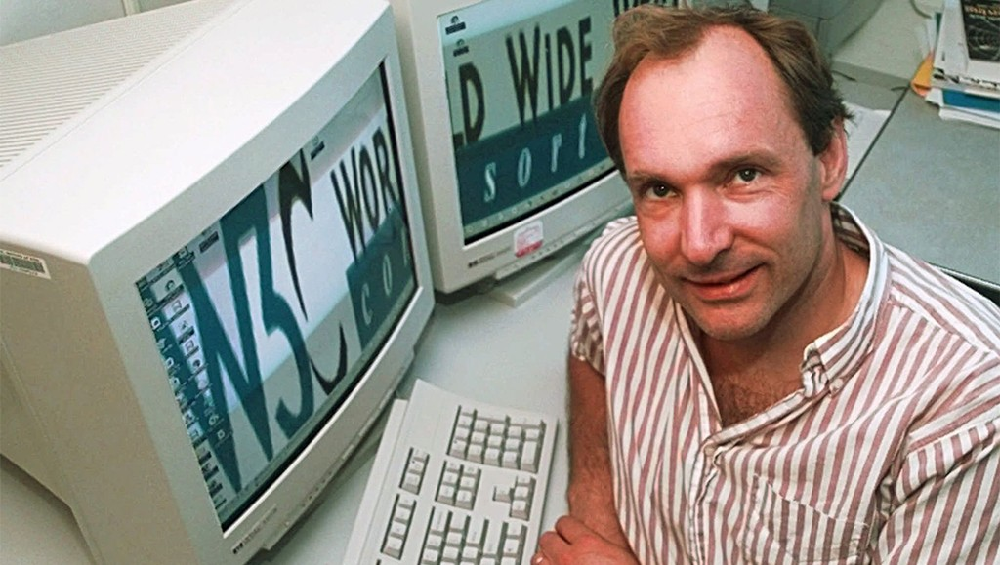
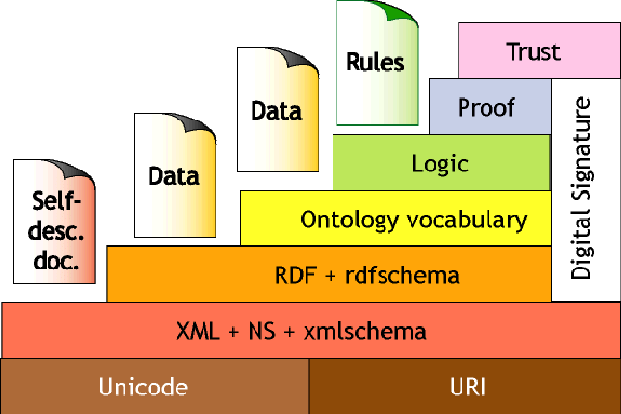

Tim Berners-Lee
Tim Berners-Lee adalah tokoh kunci dalam sejarah teknologi informasi, terkenal sebagai penemu World Wide Web. Dengan menciptakan protokol dan teknologi yang memungkinkan komunikasi di internet, ia telah mengubah cara manusia berinteraksi, berbagi informasi, dan mengakses pengetahuan di seluruh dunia. Berners-Lee berkomitmen pada prinsip-prinsip terbuka dan aksesibilitas dalam teknologi web, dan terus berkontribusi pada inovasi dan pengembangan standar yang mendukung ekosistem digital yang lebih baik. Karyanya telah menjadikannya salah satu inovator paling berpengaruh di era modern, dan visinya untuk web yang lebih inklusif dan aman tetap relevan hingga saat ini.

kontribusi di Dunia Teknologi
Penemu World Wide Web

Penemuan World Wide Web oleh Tim Berners-Lee pada tahun 1989 adalah pencapaian paling signifikan dalam sejarah teknologi informasi. Ini bukan hanya revolusi dalam cara kita mengakses dan berbagi informasi, tetapi juga mendasari pengembangan internet modern yang kita kenal saat ini. Web telah mengubah cara manusia berkomunikasi, bekerja, dan hidup secara keseluruhan.
Pendiri W3C
Dengan mendirikan W3C (World Wide Web Consortium) pada tahun 1994, Berners-Lee menetapkan standar untuk pengembangan web yang berkelanjutan dan inklusif. Organisasi ini bertujuan untuk memastikan bahwa web tetap terbuka dan dapat diakses oleh semua orang. Peran ini menunjukkan komitmennya terhadap prinsip-prinsip keterbukaan dan kolaborasi, yang sangat penting untuk pertumbuhan dan evolusi web.
Pengembangan Web Semantik
im Berners-Lee adalah pionir dalam web semantik, yang bertujuan untuk membuat data di internet lebih terstruktur dan dapat dipahami oleh mesin. Dengan teknologi seperti RDF (Resource Description Framework), ia ingin menciptakan web yang tidak hanya diakses oleh manusia tetapi juga "dimengerti" oleh komputer, memungkinkan integrasi data yang lebih cerdas dan informasi yang lebih relevan bagi pengguna.